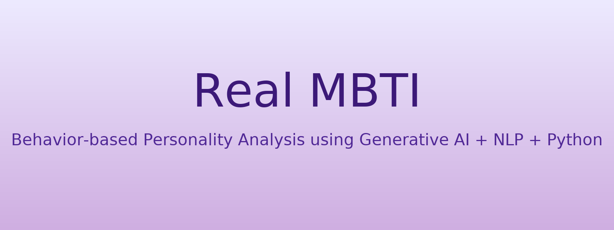
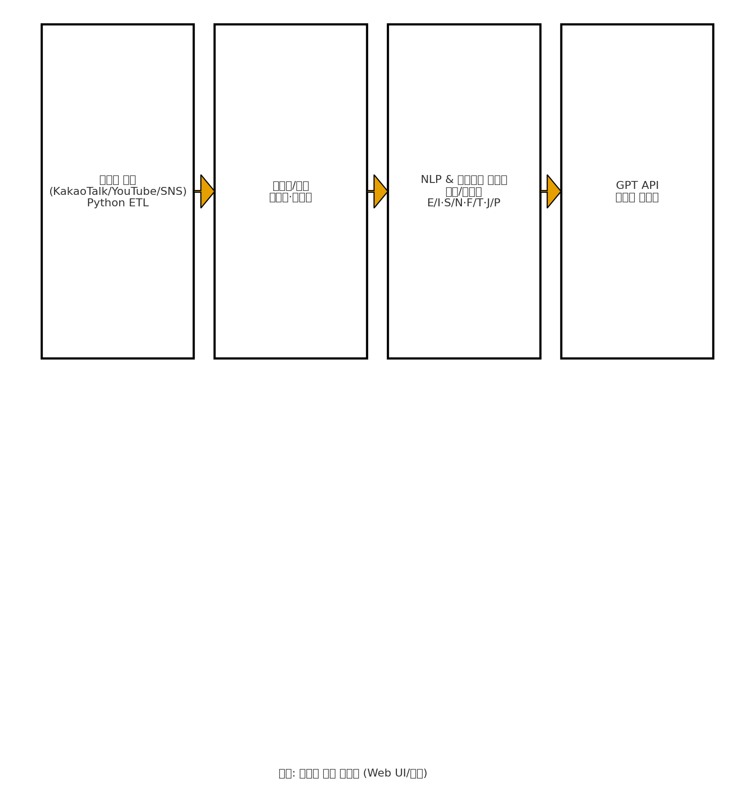
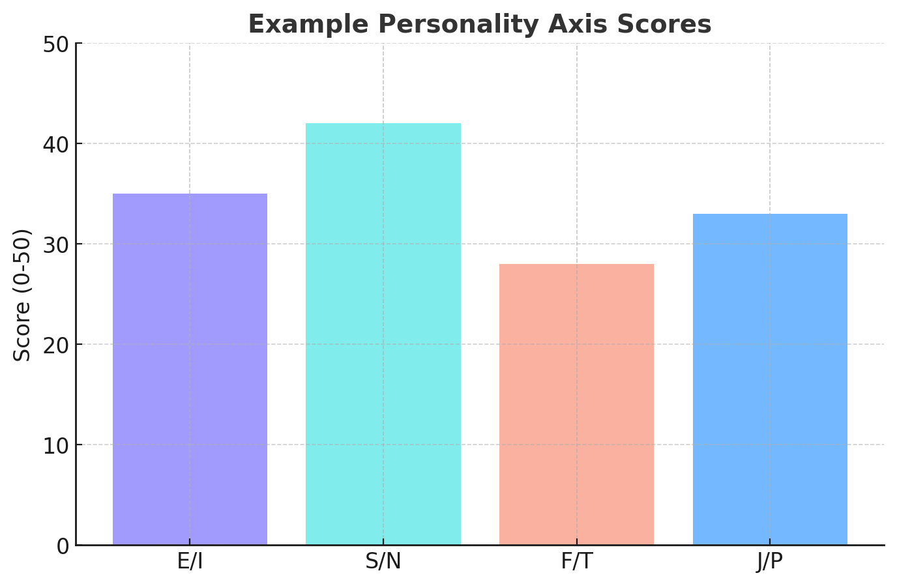

About Me
저는 사람의 행동 데이터를 기술로 분석하고, 이를 통해 ‘보이지 않는 성향’을 드러내는 데에 흥미를 느끼는 개발자입니다. 단순히 기능을 구현하는 것을 넘어, 기술이 인간을 더 깊이 이해하도록 만드는 데에 집중하고 있습니다.
AI와 데이터 분석의 교차점에서 사용자 중심의 서비스를 구현하는 것을 목표로 하고 있으며, Python과 Java를 활용해 백엔드 로직을 안정적으로 설계하고, React를 통해 직관적인 인터페이스를 만들어내는 데 자신이 있습니다.
이번 Real MBTI 프로젝트를 통해 행동 데이터를 기반으로 한 ‘진짜 성향 분석 시스템’을 구현하면서, 생성형 AI의 활용 가능성과 데이터 분석의 가치에 대해 깊이 탐구했습니다.
Skills
Frontend
JavaScript, TypeScript, React
Backend
MySQL, Java, Python
DevOps & Tools
Git, Figma
Project: Real MBTI
문제 정의
기존 MBTI 검사는 설문 응답에 의존하여 실제 행동과 성향이 다르게 나타나는 한계가 있었습니다. 사람들의 대화, 검색, 시청 등의 행동 데이터에는 ‘진짜 성향’이 담겨 있음에도 이를 분석해주는 시스템이 부족했습니다. Real MBTI는 생성형 AI를 활용하여 개인의 행동 데이터를 분석하고, 설문 없이도 행동 기반의 성향 리포트를 자동으로 생성하는 시스템입니다.
아키텍처 / 설계
- Python으로 카카오톡, 유튜브, SNS 데이터를 정제하고 통합
- NLP와 규칙 기반 알고리즘으로 감정, 키워드, 성향 축 점수(E/I, S/N, F/T, J/P) 계산
- GPT API를 통해 자연어 리포트 자동 생성
핵심 기능
1️⃣ 행동 기반 MBTI 분석
Python 스크립트로 대화 및 시청 데이터를 수집하고 NLP를 통해 감정과 키워드를 추출합니다. 이후 규칙 기반 알고리즘이 성향 점수를 계산하여 행동 데이터를 기반으로 한 MBTI를 생성합니다.
2️⃣ 생성형 AI 리포트 자동화
GPT API가 분석된 데이터를 자연어로 해석하여 개인 맞춤형 리포트를 자동으로 생성합니다.
나의 역할 및 기여
- Python 기반 데이터 수집 및 전처리 로직 구현
- NLP 및 감정 분석 알고리즘 설계 및 테스트
- GPT API 연동을 통한 자동 리포트 생성 기능 구현
- 시스템 아키텍처 및 백엔드 통신 구조 설계
결과 및 성과
- 데이터 기반 MBTI 생성 성공 — 설문 없이 행동 데이터로 성향 리포트 생성
- AI 리포트 자동화율 100% 달성 — GPT 기반 자연어 리포트 완성
- 확장 가능성 확보 — HR, 콘텐츠 추천, 상담 등 다양한 산업적 응용 가능성
회고
배운 점
데이터 전처리와 NLP 분석의 중요성을 체득하고, 생성형 AI의 응답 제어 기술을 깊이 이해했습니다.
개선점
React 기반 시각화 대시보드 추가 및 음성·이미지 데이터 통합을 통한 분석 정확도 향상을 계획 중입니다.
Images & Diagrams
프로젝트 메인 배너
아키텍처 다이어그램
예시 성향 점수 차트
※ 이미지는 프로젝트 개요 PDF를 바탕으로 제작된 예시 시각화입니다.